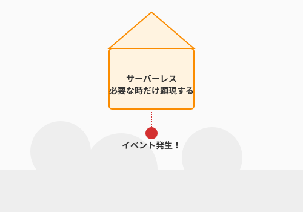

6.7 【外伝】浮遊する魔導城——サーバーレスとクラウドの経済学

導入: 実体を持たないインフラ
かつて、魔法を発動させるには自前の魔法陣（サーバー）を丹念に描き、維持し続ける必要がありました。しかし現代のクラウドという空には、必要な時だけ顕現し、役目を終えれば雲散霧消する「浮遊する魔導城（サーバーレス）」が存在します。
サーバーレス（AWS Lambdaなど）やコンテナオーケストレーション（Kubernetes）は、アルケミストを「インフラの管理」という重労働から解放し、本質的な「魔法の記述」に専念させてくれます。本節では、この実体を持たない城の運用術と、その代償である「魔力（コスト）」の管理を学びます。

瞬時の顕現：FaaSとイベント駆動
サーバーレスの極意は、「イベントが発生した時だけ、魔力が物質化する」という点にあります。
- 従来: 冒険者が一人もいない夜中も、城（サーバー）の門番に給料を払い続ける。
- サーバーレス: 冒険者が門を叩いた瞬間だけ、門番が召喚され、仕事が終われば消える。
このアプローチにより、私たちは「スケーラビリティ（拡張性）」という最強の魔法を手にします。冒険者が1人でも、100万人でも、浮遊城はそれに応じて自ずと大きさを変えるのです。
魔力の節約術：FinOps
浮遊城の維持には、物理的な実体がない代わりに、精緻な「魔力の代償（課金）」が求められます。
無駄な呪文を走らせ続ければ、クラウドの魔力供給源から膨大な請求が届きます。FinOps（フィノプス）とは、技術力を使って魔力の消費を最適化する、現代の「節約術」です。
- 適切なリソースの配分: 必要な分の魔力（メモリ）だけを割り当てる。
- 冷たい始動（Cold Start）への対策: 召喚にかかる時間を最小限に抑える術式を組む。
まとめ
- 実体からの解放: サーバーという「モノ」ではなく、「価値（コード）」の実行に集中する。
- 変化への適応: 負荷に応じて自動で伸縮する、しなやかなインフラを構築する。
- 経済的な美学: 効率的な術式は、コストという面でも「美しく」あるべきである。
あなたの魔法は、もう地面に縛られる必要はありません。広大なクラウドの空へ、城を浮かべましょう。
AIへの詠唱例
AWS Lambda と API Gateway を使って、QuestForgeの「通知送信機能」を実装したいです。
イベント駆動（SNSやEventBridgeとの連携）を意識したアーキテクチャ構成案と、
コストを最小限に抑えるためのTerraformコードの例を提示してください。さらに学ぶためのリソース
- 🌐 Web: Serverless Manifesto（サーバーレスの本質的な価値観を整理した宣言）
- 🌐 ドキュメント: AWS Lambda Documentation（サーバーレスコンピューティングの先駆者の公式ドキュメント）
- 🌐 ドキュメント: Vercel Documentation（サーバーレスなフロントエンドとバックエンドのデプロイを極限までシンプルにするプラットフォーム）
- 📄 論文: E. Jonas et al. "Cloud Programming Simplified: A Berkeley View on Serverless Computing" (2019)（サーバーレスがクラウドの未来をどう変えるかをバークレー大学の研究者が論じた重要論文）
- 📚 書籍: サーバーレス開発ガイド（AWSを活用した実践的なサーバーレスアーキテクチャの構築方法）